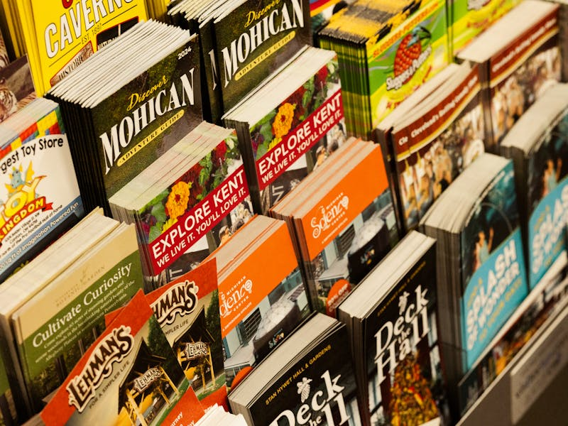

Which three imperative verbs do we use most often when we give street directions?
What is the difference between opposite and next to?
How can you politely ask someone to repeat directions?
Your friend asks, "Did you say turn right at the bank?" What is he doing?
Name five places in a town centre that tourists often ask about.
How do we make an imperative negative? Give an example for directions.
Which phrase can you use to check that you understood a whole set of directions?
19. Write a walking tour of your neighbourhood (8–12 sentences). Use the template below and at least six imperatives and four prepositions of place.
Start at … / Go straight ahead along …
Turn … at … / Take the … turning on the …
Go past … / On your left (right) you will see …
The … is opposite (next to / between) …
Don't miss … / Finish your walk at …
20. Creative task. Design one panel of a tourist-information leaflet called "Two Hours in …" (your town). Include: a catchy title, two sights with a one-sentence description each, walking directions between them, and one visitor tip beginning with Don't…

Self-check: tick what you can do now.
I can name the main places in a town centre in English.
I can give clear street directions using imperatives.
I can describe the exact location of a building with prepositions of place.
I can ask for repetition and check that I have understood directions.
I can write a short walking route or leaflet panel for a visitor.